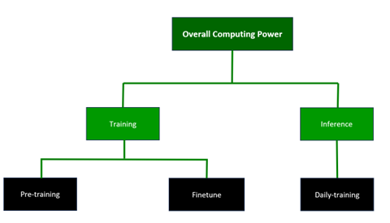
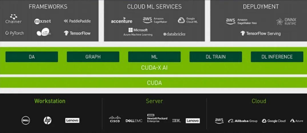
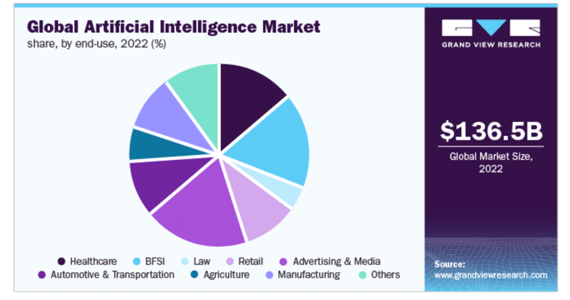
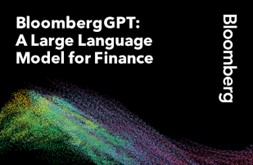
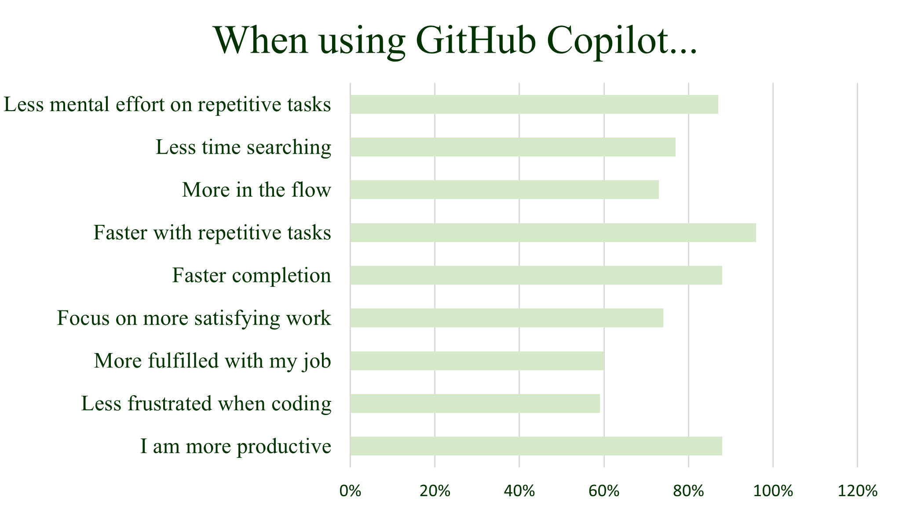

Abstract:
Artificial Intelligence (AI) has made significant contributions to various industries, including finance, technology, and content generation. In the finance industry, AI applications such as text generation, customer service support, and technical analysis have the potential to enhance financial services. Chatbots and AI models like BloombergGPT are utilized to improve customer service, automate text generation, and provide accurate financial analysis. In the technology industry, tools like GitHub Copilot assist developers in code generation, speeding up tasks, and preserving mental energy. AI-powered code completion tools have the potential to revolutionize software development workflows. In the content generation industry, AI technologies such as natural language processing (NLP) are transforming self-media platforms by generating high-quality content. Additionally, AI plays a vital role in shaping laws and regulations, particularly in legal research, contract analysis, and e-discovery processes. AI-powered tools provide efficient and accurate solutions, improving productivity and reducing costs in legal practices.
Content:
- 1.1 The Upper stream: computing power and data services
- 1.2 The downstream: AI technology Applications
- 2.1 Finance Industry
- 2.2 Technology Industry
- 2.3 Content Generation Industry (self-media, laws, and regulation)
1. Introduction
Artificial Intelligence (AI) has emerged as a transformative force, revolutionizing industries, and redefining the way we work and interact. With its ability to analyze vast amounts of data, understand context, and generate human-like responses, AI is reshaping sectors such as finance, technology, and content generation. In this paper, we explore the profound impact of AI in these industries, examining the opportunities it presents and the challenges it brings.
In the finance industry, AI is poised to enhance financial services through various applications. Text generation algorithms can automate the creation of personalized content for marketing and customer service, reducing the workload on human teams. Customer service support, powered by chatbots and AI models like BloombergGPT, provides real-time answers, improves response times, and elevates the overall customer experience. Additionally, AI aids in technical analysis, assisting financial institutions in credit risk assessment, fraud detection, and compliance monitoring.
The technology industry is experiencing a paradigm shift with the integration of AI. Tools like GitHub Copilot leverage AI algorithms to enhance developer productivity. By automatically generating code and offering suggestions, AI accelerates coding tasks and helps developers focus on more complex challenges. The impact of AI in code generation has the potential to revolutionize software development workflows, optimizing efficiency and speeding up the delivery of projects.
In the content generation industry, AI is transforming self-media platforms and content creation processes. Natural Language Processing (NLP) techniques enable AI models like OpenAI's GPT-3 to generate high-quality, contextually relevant articles and social media content. AI-powered content generation tools improve efficiency, scalability, and user engagement, reshaping the way content is produced and consumed.
AI is also playing a pivotal role in shaping laws and regulations in industries such as finance and legal. In legal research, AI-powered platforms analyze vast amounts of legal documents, statutes, and cases, providing lawyers with comprehensive and relevant insights. AI tools assist in contract analysis, speeding up the review process, reducing errors, and improving risk management. In e-discovery, AI algorithms efficiently analyze and categorize electronic documents, saving time and costs associated with manual review.
While AI offers significant advancements and opportunities, it also raises ethical considerations, data privacy concerns, and potential job displacement. Striking the right balance between AI implementation and human decision-making is crucial for sustainable and responsible AI adoption.
This paper delves into the applications and implications of AI in the finance, technology, and content generation industries. By examining real-world examples and research findings, we aim to provide a comprehensive understanding of how AI is transforming these sectors and shaping the future of work and innovation.
1. Overview of AIGC
This section discusses the upper stream and downstream sectors of the AI industry. The upper stream focuses on computing power and data services, including pretraining, finetuning, and inference training of AI models, while the downstream sector, also known as the applied AI sector, applies AI technologies to various industries such as finance, healthcare, retail, and media.
1.1 The Upper stream: computing power and data services
The upper stream industry chain of AIGC consists of computing power and data services. For overall computing power: pretraining refers to the use of large-scale unlabeled data to train a model, so that the model can learn common features and structures. Finetuning refers to the process of supervised fine-tuning of a pre-trained model using annotated data to adapt it to a specific task. During the finetuning stage, the model can be trained with relatively less annotated data in a shorter period. "Inference training refers to the training of a model on inference tasks using the finetuned model, in order to further improve the model's performance and generalization ability.
Figure 1 Structure of Computing Power
 Source: OpenAI1.1.1 Training
The AI chip is the 'heart' of AI computing: With the increasing amount of data, complex algorithm models, heterogeneous processing objects, and high computing performance requirements, AI chips are increasingly used to efficiently handle diverse and complex computing tasks in AI applications. Among them, GPUs are better at parallel computing than CPUs. CPUs are latency-oriented computing units, while GPUs are throughput-oriented computing units, which are used to execute multi-task parallelism. Due to the differences in microarchitecture, most transistors of the CPU are used to build control circuits and caches, with only a small portion of transistors used for computation, while GPUs have stream processors and VRAM controllers using most transistors, resulting in more powerful parallel computing and floating-point computing capabilities. AI servers, as the carrier of supercomputing chips, demonstrate their importance: Unlike general-purpose servers that use a serial architecture with CPUs as the computing provider, AI servers adopt heterogeneous architectures, such as CPU+GPU, CPU+TPU, CPU+other accelerator cards, and other different combinations. Currently, the most widely used is the CPU+GPU combination. Compared to general-purpose servers, AI servers have better high-performance computing capabilities. In the future, with the continuous growth of computing power and the deepening development of AI models such as natural language processing, images, and videos, AI servers will be more widely used.
Operator computing support: In 2022, the three major domestic operators actively supported the development of the digital economy, and the related business income of industrial digitalization grew rapidly. Currently, industrial digitalization has become the main driving force for the growth of the three major operators. At the same time, the three major operators continued to increase their investment in computing network construction in 1H22, with a total capital expenditure of 162.05 billion yuan, a year-on-year increase of 27%. From the perspective of capital expenditure structure, operators' investment in digital transformation, represented by cloud computing and computing networks, has gradually increased. From the annual work conference of the three major operators in 2023, it can be observed that in the future, operators will continue to play a leading role in the construction of China's digital economy and further accelerate the construction of computing infrastructure.
Servers: according to IDC, the global high-performance server market for AI work will grow by 51.4% YoY in 2022, and the shipment growth rate of the domestic server market is expected to rebound to 6.41% in 2023.
Switches: IDC predicts that the domestic Ethernet switch market size will grow by 9.2% YoY in 2023. The upgrading of computing power will drive the accelerated deployment of 200/400G high-speed products. At the same time, the rapid development of AIGC acceleration will lead to the rapid increase of switch chip speed and power consumption.
Optical communication: the estimated demand for 20,000 GPUs for ChatGPT large models in 2023 will reach 30,000 when commercialized. Referring to the network architecture of NVIDIA GPU H100, an average of five optical modules can be matched with a single GPU. The popularity of AI models will bring a significant increase in demand for optical modules.
NVIDIA's business model aims to create a computing stack or neural network-like structure, consisting of four layers of hardware, system software, platform software, and applications. The company leverages its full-stack innovation capabilities in chips, systems, and software to build an accelerated computing platform and improve its GPU, CPU, and DPU chip product structures for AI acceleration and data centers. In terms of AI deployment, NVIDIA has been involved in and collaborated with OpenAI and Microsoft since the early days of generative AI transformation. In March 2023, NVIDIA launched four inference platforms optimized for various generative AI applications at the GTC conference, including the H100 NVL acceleration computing card with dual GPU NVLink to support large-scale language model inference such as ChatGPT. Compared to the HGX A100 for GPT-3 processing, servers equipped with four pairs of H100, and dual GPU NVLink can achieve up to 10 times faster speed.
Figure 2 Industry Chain of CUDA
 Source: NVIDIACUDA (Compute Unified Device Architecture) is an integrated technology introduced by NVIDIA, which allows users to use GPUs for computing tasks beyond image processing. CUDA is also the first development environment that allows GPU to be used as a C compiler. In 2006, NVIDIA released the CUDA architecture for GPU programming, which provides a simple interface for GPU programming. Based on CUDA, applications can be compiled for GPU, and the parallel computing power of the GPU can be used to solve complex computational problems more efficiently. CUDA enables GPUs to truly achieve more general computing, reducing the threshold for GPGPU applications. CUDA and GPGPU have directly promoted the development and industrial revolution of AI and deep learning.
1.1.2 Data Services
Data is the 'feed' for large models, and AI engineering consists of both data engineering and model engineering. Data resources have a significant impact on the maturity of models, and effective data processing and handling can improve the accuracy and efficiency of large models. Data engineering is a prerequisite and fundamental part of AI engineering, with the core being efficient data annotation.
Figure 3 Flow Chart of Data Services
Vector databases are expected to experience important development opportunities. Vector database platforms Weaviate and Pinecone have received funding of $50 million and $100 million respectively. Vector databases are specialized database systems used to store and query high-dimensional vector data, and are widely used in machine learning, computer vision, natural language processing, and other fields for efficient storage, indexing, and querying of large-scale vector data. Traditional relational databases usually store data in tabular form, while vector databases use vectors as data storage units, offering the following advantages:
1) efficient vector queries: traditional relational database queries are mainly based on conditions and logical operations, while vector database queries are based on vector similarity matching. By using vector similarity algorithms, vector databases can quickly query data that is most like a certain vector.
2) good scalability: vector databases usually support the storage and querying of large-scale vector data and can easily scale the system's performance by adding more nodes.
3) better data visualization: vector databases can convert high-dimensional vector data into points in low-dimensional space for data visualization and understanding.
4) better machine learning support: vector databases can store and query training datasets and model parameters as part of machine learning models, which helps simplify the process of model deployment and debugging.
Data is the foundation of the data factor market. As a new production factor, data is the foundation of digitization, networking, and intelligence, and has quickly integrated into various aspects of production, distribution, circulation, consumption, and social service management. The upstream of the data factor market industry chain is data suppliers, the middle stream is data exchanges, data storage, database and other technology and service providers, and the downstream is application merchants of data resources. We believe that the source and existence of the data factor market lie in data. Only when society accumulates a large amount of data and produces data products can it be traded in the market.
1.2 The downstream: AI technology Applications
The downstream of the AI industry usually refers to the area of the industry where technologies regarding artificial intelligence are applied into products or services. This is why the downstream is commonly referenced as the applied AI sector. The applied AI sector is currently estimated at a market size of 136.5 billion dollars in 2022, with the bulk of the market share being a composition of finance, healthcare, retail, and media. The industry is expected to grow at a CAGR of 37.3% from 2023 to 2030.
Figure 4 Global Applied AI Market Breakdown
 Source: Grand View ResearchThe rise of AGI programs like OpenAI's GPT has brought about new heights in the realm of applied AI. The implementation of this newfound technology has aided the creation of numerous new investment opportunities. With technologies like cognitive thinking, chatbots, augmented reality and complex decision making, AGI has the potential to truly reshape applied AI.
One sector of applied AI that has grown exponentially thanks to the incorporation of AGI technology is the healthcare sector. Research forecast that the healthcare sector will gain a leading share in the applied AI market by 2030. One of the most prominent applications of AGI is Virtual Health Assistants. Through using an integrated system of cognitive computing, augmented reality, and body and speech gestures, firms are able to create personalized artificial health care assistants. These assistants can optimize the time needed to answer patients' queries as well as allocate the right treatments to the patients in need.
A start-up called Viz.ai is trying to revolutionize the health care industry by taking AI health assistants to the next level. Through collaborating with machine learning experts from various prominent universities, the firm has developed an algorithm to quickly detect suspected symptoms and report to human care teams. Then, treatment can be quickly administered without delay in time. One of their most recent breakthroughs is the Viz Cardio Suite application. Through the usage of a self-designed AI algorithm, the application can detect cardiovascular diseases after information such as a CT scan is uploaded onto the app. For example, the algorithm detects pulmonary embolism through using an AI-powered RV/LV ratio analysis, a process that compares the ratio between the two halves of the heart. Then, the patient’s situation is cross checked with past data of patients with similar conditions retrieved from the CVIS (Cardiovascular Information System) as well as data from the firm in order to make a final diagnosis. Lastly, after a diagnosis has been made, the AI uses a HIPAA chat bot to contact specific experts tailored for each patients' conditions. The firm has currently received over 200 million dollars' worth of funds and over 5.2-million-dollar worth of predicted yearly revenue in its first year.
Another opportunity comes from the defense sector of the AI industry. As conflicts around the world continue to spark in the recent years, companies are investing heavily on utilizing autonomous AI with accurate decision-making capabilities. With technologies like natural language processing (NLP) developing rapidly over the past few years, data generation capacity by autonomous AIs have skyrocketed, aiding its development and decision analytics. Using NLP, AIs are able to obey military commands and generate information at a level more accurate than ever. Also, there have been technologic improvements in the fields of computer vision. Computer vision is a field of artificial intelligence that allows systems to derive meaning information from images, videos and other visual inputs. This technology is applied heavily in defense AIs. Through utilizing the technologies listed above, AI used in defense can more accurately take in commands as well generate combat data that is more accurate than ever before to aid battle autonomous AI’d decision analytics.
One company that has utilized this new age of data generation into their autonomous battle pilots AIs is Shield AI. Their AI pilot “Hivemind” is the first and only autonomous pilot that has been deployed in combat by the US military since 2018. Similar to a human pilot, Hivemind reacts to the battlefield using its built-in decision-making algorithm. With the program not requiring any GPS or aids to conduct missions, it enables intelligent teams of unmanned aircrafts to perform missions ranging from room clearance with Novas, penetrating air defense systems with V-Bats, to dogfighting F-16s. The aircraft uses sensors to create a map or world-view, the computer then tells the aircraft or autopilot where to go and what to do to execute its mission. Using data generated from a self-direct learning in simulations using a technique called reinforcement learning, the AI is able to utilize visual analysis to generate a database of strategies on how to best complete missions. Thanks to the improvement of its battle data generation, the Hivemind was able to defeat human pilots in a dogfight scenario in the DARPA AlphaDogfight Trials. Shield AI has received over 573.1 million dollars' worth of funding, including funding from US Air Force’s Strategic Funding Increase Program. With a valuation of .3 billion dollars, Shield AI is set to become the leader regarding autonomous pilot AIs.
In conclusion, the AI industry's downstream provides many lucrative opportunities. Whether it be revolutionizing old technology through application AGI like Viz.ai or aiding the creation of brand-new autonomous battle pilots using an enhanced system of data generation, the opportunities are limitless.
2. Case Studies
2.1 Finance Industry
In the short-term, AI has potential to enhance financial services through text generation, customer service support, technical analysis, and workload reduction.
Text generation: With the increasing demand for personalized text content to drive sales and marketing strategies, as well as for customer service, automated solutions are becoming more necessary. Copywriting for these purposes is often simple and follows fixed templates. Coupled with the time and cost pressures of these teams, AI can assist in text generation and reduce the workload.
Customer service/task execution: Chatbots have become a common form of customer service, handling immediate tasks for customers. By integrating ChatGPT into customer service systems, banks can provide real-time answers, reduce wait times, and improve the overall experience. ChatGPT can also handle inquiries that human customer service may not be able to answer, freeing up time for more complex questions.
Technical analysis: AI can greatly enhance the level of technical processing and analysis. In terms of credit risk models, ChatGPT can help financial institutions assess lending risks more accurately. It can also serve as another level of protection in detecting fraud, authenticating users, verifying information, and monitoring activity. Additionally, AI tools may soon replace coding and computer programming skills, particularly in entry-level jobs.
Case: BloombergGPT
 Source: BloombergBloomberg has constructed the largest domain-specific data set to date, trained LLM specifically for the financial field, and developed a language model with 50 billion parameters - BloombergGPT. By strengthening LLM's professional understanding of the financial vertical field through mixed training of general text and financial knowledge, BloombergGPT's performance in financial tasks surpasses existing general LLM models. These tasks include financial news generation, stock market forecasting, financial report analysis, risk assessment, customer service, trading strategy optimization, and compliance monitoring.
The application of BloombergGPT in the financial field can not only help financial institutions improve work efficiency and reduce costs, but also provide better financial services for investors. With the continuous development of AI technology, the prospect of the application of BloombergGPT in the financial field is becoming increasingly broad.
2.2 Technology Industry
AI is beneficial for simple coding tasks, offering automation, error spotting, and suggestions for improvement. However, for larger, more complex code structures, AI has limitations. It cannot match a human developer's deep understanding and problem-solving skills. Despite AI's assistance, a user must grasp the underlying logic and architecture of the code to effectively create, troubleshoot, and maintain intricate software systems.
The launch of GitHub Copilot aimed at boosting developer productivity, with initial users experiencing an increase in productivity following its introduction. Developer productivity, though intricate and challenging to quantify, hinges heavily on developers' satisfaction and their capacity to make meaningful strides in their tasks. In a bid to gauge the impact of GitHub Copilot, a comprehensive study was undertaken, surveying over 2,000 developers about their experiences with the tool. The research approach took a holistic view of productivity, factoring in developers' perspectives, and analyzed the effects of GitHub Copilot in real-world development settings. The findings revealed that 60-75% of users felt more fulfilled, less frustrated, and could concentrate more on satisfying work when using GitHub Copilot. Furthermore, GitHub Copilot aided developers in maintaining their flow (73%) and saved mental effort during repetitive tasks (87%).
Leveraging the SPACE framework for the research, it was discovered that satisfaction, well-being, efficiency, and flow were vital to developer productivity. According to the large-scale survey, developers found that GitHub Copilot expedited the completion of tasks, especially repetitive ones. A controlled experiment involving 95 professional developers showed that the group employing GitHub Copilot had a higher task completion rate (78% vs 70%), and they finished tasks 55% quicker than the group not using the tool.
The research suggests that GitHub Copilot enhances the speed of task completion, preserves mental energy, allows developers to focus on more satisfying tasks, and amplifies the joy of coding. The tool has also been favorably reviewed by engineering leaders in companies that undertook early trials with GitHub Copilot. Beyond this, the wider research community is examining the implications of AI-powered code completion tools like GitHub Copilot in various contexts, including education, security, the labor market, and developer practices and behaviors.
Figure 5 GitHub Copilot User Experience
 Source: GitHubStatistically, in the current usage of GitHub Copilot, AI is responsible for writing 46% of the code. This impressive contribution has the potential to elevate the working speed of developers by as much as 55%. In essence, this points to the considerable promise of GitHub Copilot as a substantial facilitator of efficiency, speed, and an indispensable tool in the modern software development workflow.
Built on the GPT-4 large language model, GitHub Copilot has established a chat-centric mode revolving around software program code, covering all aspects of the development lifecycle. By integrating chat and voice capabilities, developers are afforded the luxury of engaging in natural conversations with AI. Copilot extends its reach beyond merely generating code automatically; it's integrated into pull requests, command lines, and documentation, providing immediate answers to project-related queries.
2.3 Content Generation Industry (self-media, laws, and regulation)
Artificial Intelligence (AI) has emerged as a game-changer in various industries, and the content generation sector is no exception. With its ability to analyze vast amounts of data, understand context, and generate human-like content, AI is revolutionizing self-media platforms and playing a pivotal role in shaping laws and regulations. This essay explores the profound impact of AI in the content generation industry, providing solid qualitative and quantitative evidence to support the discussion.
AI technologies such as natural language processing (NLP) and machine learning algorithms are transforming the way content is generated. Self-media platforms, including blogs, social media, and online news outlets, are increasingly utilizing AI to produce high-quality and engaging content. One notable example is OpenAI's GPT-3, a powerful language model that can generate coherent and contextually relevant articles, blog posts, and social media captions.
A study conducted by researchers at Stanford University found that AI-generated news articles written by OpenAI's GPT-3 received similar engagement metrics (click-through rates, time spent on page) compared to articles written by human journalists. This suggests that AI-generated content can be as compelling and informative as human-authored content.
Numerous self-media platforms have reported significant improvements in content creation efficiency and scalability after implementing AI-based content generation tools. For instance, a popular news aggregator used AI to automate the summarization of news articles, resulting in faster news updates and enhanced user experiences.
Enhancing Laws and Regulations:
AI is also playing a crucial role in shaping laws and regulations related to content generation. With the exponential growth of digital content and the challenges associated with ensuring accuracy, fairness, and compliance, AI-powered solutions are becoming indispensable in monitoring, filtering, and regulating online content.
Legal Research:
AI-powered platforms are transforming legal research by efficiently analyzing vast amounts of legal documents, cases, and statutes. For instance, platforms like ROSS Intelligence and Westlaw utilize natural language processing and machine learning algorithms to provide lawyers with comprehensive and relevant legal research results. These platforms can quickly identify relevant cases, extract key information, and offer valuable insights, significantly reducing the time and effort required for manual legal research.
A study conducted by the McKinsey Global Institute found that AI-based legal research tools can perform tasks, such as contract review and due diligence, 20% to 50% faster and with higher accuracy compared to traditional methods. Legal professionals who have adopted AI-powered research tools report improved efficiency, increased access to relevant legal information, and the ability to provide more accurate and comprehensive legal advice to clients.
Contract Analysis and Review:
AI technologies are streamlining the process of contract analysis and review, saving time, and improving accuracy. AI-powered contract analysis tools can automatically extract key provisions, identify potential risks, and compare contracts for inconsistencies or deviations from standard clauses. This enables lawyers to focus on higher-value tasks, such as negotiation and strategic decision-making.
A study by the Association of Corporate Counsel found that AI-based contract analysis tools reduced contract review time by 60% and decreased costs by 30%. Law firms and legal departments using AI-powered contract analysis tools report increased efficiency, reduced errors, and improved risk management in contract-related processes.
E-Discovery and Document Review:
AI is transforming the process of e-discovery and document review, which involves sifting through large volumes of electronic data during litigation or investigations. AI-powered tools can efficiently analyze and categorize documents based on relevance, privilege, and other factors, significantly reducing the time and cost associated with manual document review.
A study conducted by the RAND Corporation found that AI-based document review tools can achieve up to 80% reduction in review time compared to traditional methods. Law firms and litigation support teams utilizing AI-powered e-discovery tools report improved accuracy, increased productivity, and cost savings in document review processes.
3. Conclusion
Artificial Intelligence has revolutionized various industries by providing advanced capabilities in text generation, customer service, technical analysis, code generation, and legal research. The finance industry benefits from AI applications, improving efficiency and customer experience. In the technology sector, AI tools like GitHub Copilot enhance developer productivity and speed up coding tasks. The content generation industry witnesses the power of AI in producing engaging and contextually relevant content. Furthermore, AI contributes significantly to the legal field, streamlining legal research, contract analysis, and e-discovery processes. The adoption of AI-powered tools results in increased efficiency, accuracy, and cost savings. As AI continues to advance, its impact across industries will continue to reshape and improve various aspects of our daily lives.